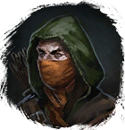
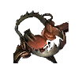
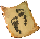
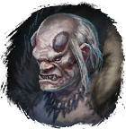
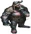
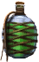
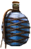
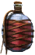

Ловец
Открыть в интерактивной вики →
Описание
По следу! [Треб. ур. 110]
Этап 1: Найти 2 пары
Этап 2: Найти странные следы
Опыт питомцу - 30к+
Этап 3: Найти и убить
Опыт питомцу - 40к+
Этап 4: Начать тренировку атаковав Ловца.
Появление примерно в указанных зонах.
Этап 1: Найти 2 пары

Ловушки в отмеченных на карте местахЭтап 2: Найти странные следы

Следы великанчика в указаном местеОпыт питомцу - 30к+
Этап 3: Найти и убить

Морозная великанша-шаманка и добыть
ВеликанчикОпыт питомцу - 40к+
Этап 4: Начать тренировку атаковав Ловца.
- Награда:
- Опыт питомцу - 45к
- Опыт игроку - 150к
 Золото - 200к
Золото - 200к- Отвар выносливости

Отвар выносливости - 3х - Отвар маны

Отвар маны - 3х - Отвар здоровья

Отвар здоровья - 3х
Появление примерно в указанных зонах.